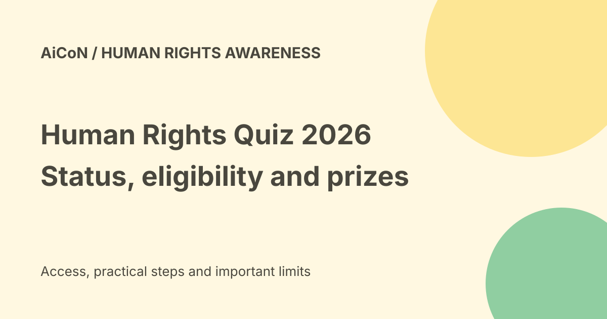

Human Rights Quiz 2026: status, age rules and prize selection
NHRC India and MyGov list a Human Rights Quiz ending on Saturday, 10 October 2026 at 11:45 pm. It has fifteen questions and a five-minute limit. On 7 October the live browser showed login-to-play links, while the fetched text displayed Closed. Check the portal status in your own session before relying on the listed deadline.

Who runs the quiz?
The official page names the National Human Rights Commission, India, working with MyGov as part of its thirty-third Foundation Day celebrations.
The quiz focuses on the Protection of Human Rights Act, 1993, the NHRC's powers and duties, and principles such as equality, dignity and justice. This guide is an independent explanation, not an NHRC publication.
Dates and the status conflict
The page lists a 1 September 2026, 12:00 pm start and a 10 October 2026, 11:45 pm end. Calendar calculation confirms the end date falls on Saturday.
The live browser displayed MyGov and OTP login-to-play routes. A separate fetched text version showed Closed. Neither a future deadline nor a visible login button proves that a logged-in entry will be accepted. Follow the actual status and rules in your session.
Who is eligible?
The terms allow Indian citizens aged fourteen and above. NHRC and MyGov employees are excluded.
The original short post's broad wording should not be read as allowing every age group or nationality. Read the eligibility terms before beginning.
Questions and timing
The terms say the quiz starts as soon as Play Quiz is clicked. Participants must answer up to fifteen questions within three hundred seconds, which is five minutes.
Prepare your connection and available time first. Do not click Play merely to look around if you are not ready for your attempt.
One entry and final submission
Multiple entries by the same participant are not accepted. Submitted entries cannot be withdrawn.
Do not create another account to try again. The rules reject unfair means, impersonation, double participation, malpractice and fraudulent activity.
Announced prizes
The official page lists ₹15,000 for first prize, ₹10,000 for second, ₹5,000 for third and seven consolation prizes of ₹2,000 each.
These are announced rewards for selected winners. They are not payment for every participant or guaranteed earnings for taking the quiz.
How winners are chosen
The highest-scoring participants who submit within the limit enter a central pool of eligible entries. Winners are selected through system-generated automated randomisation.
A high score does not guarantee a prize. Do not describe this as a simple fastest-answer contest or promise that study will lead to money.
Cost and safe login
No entry charge is shown in the checked page. Use the exact official MyGov route, not a paid activation service or an unrelated prize-claim link.
Keep OTPs inside the official login flow. A request to pay a third party or disclose account secrets to collect a reward needs separate verification.
Before an eligible attempt
- Open the exact official quiz page.
- Check whether participation is currently available.
- Read the age, citizenship and employment exclusions.
- Confirm you have not already entered.
- Prepare a stable connection and five uninterrupted minutes.
- Use one of the official login routes.
- Start only when ready.
- Answer independently and submit within the limit.
- Keep any acknowledgement the portal supplies.
No login, quiz start or entry was made for this guide.
Fair participation and learning
Study the subject before attempting the quiz. Do not use another person's identity or outsource live answers.
The quiz is an awareness activity. Its rules prohibit unfair means, so a guide should explain participation rather than become an answer service during a live attempt.
Technical and legal limits
The organisers do not take responsibility for lost, delayed, incomplete or untransmitted entries caused by technical problems beyond their control. Proof of submission is not proof of receipt.
NHRC may change the terms or cancel the quiz in unforeseen circumstances. The organisers' decisions are final under the stated rules. Read the full terms, including dispute provisions.
What changed since the original post?
We add the fourteen-year minimum, employee exclusions, automatic timer, randomised prize selection and the conflicting public status views. The original deadline is not a promise that participation is open in every session.
Frequently asked questions
Is the deadline enough to prove it is open?
No. Check the current portal status.
Can I submit twice?
The terms reject multiple entries.
Does a top score guarantee a prize?
No. Eligible entries are randomised.
Sources: Official dates, status and full terms. Checked 7 October 2026.